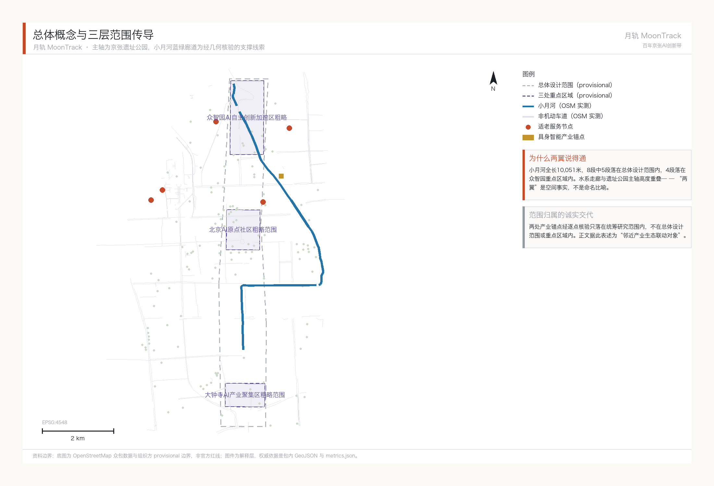
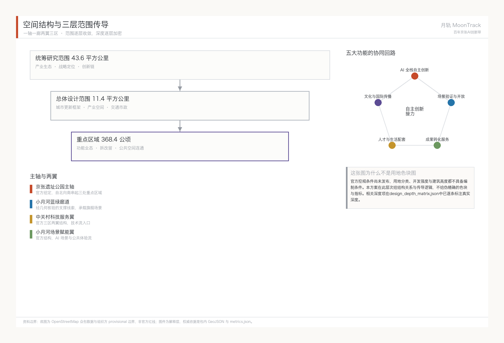
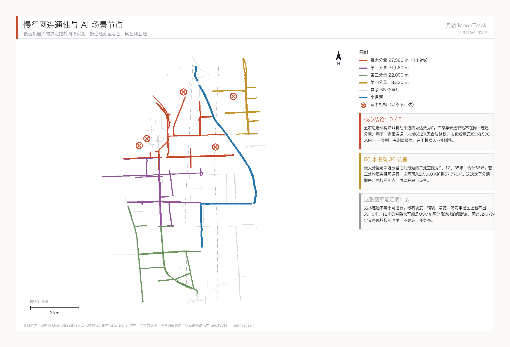
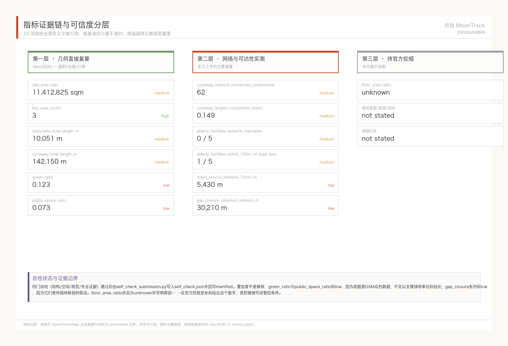

月轨 · 百年京张AI创新带总体概念与场景赋能方案
月轨 MoonTrack：以小月河场景赋能翼为旗舰的总体概念方案。对 421 段非机动车道做了连通性实测，发现慢行网碎裂为 62 个分量，五家适老机构沿法定路权的网络可达数为 0——旗舰场景在现状路权下跑不通；而最短的三处空隙合计仅 56 米，打通后主网可从 27,560 米扩到 57,770 米。据此把「先核验断点、再谈驿站设备」定为分期第一序。
月轨 · 百年京张AI创新带总体概念与场景赋能方案
设计依据与资料清单
本 formal 方案以北京市规划和自然资源委员会海淀分局发布的《百年京张AI创新带城市设计国际方案征集资格预审公告》为第一依据，并以 brief/site-package/ 中经维护者登记的临时粗略边界、重点区域、枚举、指标和来源清单为机器可读依据。AI agent 在生成方案前必须读取 design_brief.json、allowed_design_space.json、sources.json、enums/、ranges/、schemas/、data/source_registry.json 和 data/processed/agent_fact_pack.md，并用 project_scope_summary.csv、agent_task_requirements.csv、source_use_matrix.csv、missing_data_checklist.csv 建立任务、范围、资料用途和缺口清单。所有设计判断都要拆分为可追溯来源、可复算指标、可校验图层和可人工复核假设。公告要求方案达到控制性详细规划的城市设计深度和规划综合实施方案的城市设计深度，因此文本叙述不能替代 GeoJSON、指标表、A3 文册、A0 展板和 HTML 电子展示成果。
方案不是独立愿景文本，而是从公告、面向智能体任务书和场地资料出发组织成果；本节只把最关键依据放在判断旁边 来源 来源 深度。完整来源和标准覆盖分别保存在 sources.json、standard_matrix.json 与 design_depth_matrix.json，不在正文重复机器索引。
资料登记表的使用边界如下 来源：
- data/source_registry.json 登记公开、清权与临时资料的用途边界。
- 当前登记摘要：formal 可用资料 7 条，背景资料 1 条，provisional-only 资料 1 条。
- agent 不得把 background_only 或 provisional_only 资料升级为 official boundary、法定控规、正式评分依据或政府实施承诺。
data/processed/agent_fact_pack.md 是本方案的阅读导航层，不是新的权威来源 来源。它帮助 agent 把三层范围、三处重点区、公告任务、agent.1-agent.6、资料可用性和缺资料事项组织成可读方案；事实判断仍需回到已登记的原始材料 来源 来源，完整来源关系由 sources.json 保存。

在官方 SITE_BOUNDARY 来源 或三处 KEY_AREA 来源 尚未取得时，本包使用 brief/site-package/geometry/provisional_boundaries.geojson 生成临时 formal 包。提交包中的 geometry/site_boundary.geojson 与 geometry/key_areas.geojson 均必须标注为 provisional_constraint、official_boundary=false，只能用于方案生成、自检、可视化和设计讨论，不能作为 official redline、审批依据、精确面积依据或法定控制结论。该组织方数据缺口本身不阻断内容评分；替换 official polygons 后，site boundary、key areas、land use、roads、green space、public space、buildings、phasing 和 metrics 均需重算。
本次脚手架生成的可评分状态为：临时边界，保留精度警示并待正式数据发布后复算；不阻断内容评分。因此，正文中的空间结构、场景、项目和指标均按“可讨论、可复核、可替换官方边界后重算”的原则写入；当官方边界和重点区 polygon 更新后，agent 必须重新运行脚手架、自检和图纸/HTML生成，不能只替换单个文件。
边界解释可回到总体范围图层和面积复算 空间数据 指标。三处重点区则由独立图层和数量指标核对 空间数据 指标。这意味着读者可以从正文进入证据，但不必先读一串机器编号。
三层范围工作框架
方案按照公告确定的三个层次组织工作：统筹研究范围关注 43.6 平方公里的AI产业生态、战略定位、创新链和未来城市形态；总体设计范围关注 11.4 平方公里京张遗址公园周边 1-2 公里城市地区和产业区，要求形成城市更新总体框架、产业空间布局、交通市政支撑和城市风貌控制；重点区域范围关注 368.4 公顷三处详细设计地区，要求明确功能业态、建筑规模、拆改留分类、公共空间连通和交通组织。三层范围在 compliance_matrix.json 中逐条映射，保证公告 1.3、1.4、1.5 与 agent.1-agent.6 的必选任务都有章节、图层、指标、图纸和 HTML 证据。
三层工作框架的深度项由 深度 和 深度 约束，空间证据以 空间数据 与 空间数据 为准，任务依据以 标准 为准，范围索引以 来源 中 project_scope_summary.csv 的三层范围表为导航。

三层工作不是互相割裂的图纸集合。统筹研究决定产业链和城市形态判断，总体设计把判断落实到更新项目、空间结构和设施承载，重点区域详细设计验证具体地块、建筑、交通、公共空间和AI应用场景的可实施性。agent 生成方案时必须先锁定当前提交采用的 official 或 provisional 边界和约束，再生成用地、建筑、道路、绿地、公共空间、分期和AI服务节点，最后从这些图层复算指标并在正文解释哪些结论仍受 provisional boundary 限制。任何无法从结构化数据复算的面积、比例、规模或项目数量，不得写入正式结论。
本方案的总体概念定为“月轨”(MoonTrack)。1905年，詹天佑接下京张铁路的时候，外国工程师大多认为中国人修不成——没有先例，没有外援，关沟段那道连续陡坡尤其被当成过不去的坎。四年后，“人”字形展线爬上了那道坡，京张铁路通车，是中国第一条完全由中国人自己设计、自己出资、自己建成的干线铁路。一百年后，官方给这条走廊的五大功能排了序，排第一的是“AI全栈自主创新体系”——问的其实是同一个问题：能不能自己做出来。“月轨”里的“轨”对应这条百年自主创新的脊梁，“月”对应场地内真实存在的小月河，也是车站“月台”的联想，一个词装下两个真实的场地元素。
“月轨”不取代官方项目全称“百年京张AI创新带”，定位是总体概念层面的子品牌，统筹官方已经命名的三区两翼（众智园AI自主创新加速区、北京AI原点社区、大钟寺AI产业集聚区、中关村科技服务翼、小月河场景赋能翼）在视觉和传播层面的一致性。空间组织上，主轴仍是官方任务书给定的京张遗址公园，自北向南串起三处重点区域；主轴之外叠加了一条经过真实几何核验的支撑线索——小月河蓝绿廊道。实测数据显示，小月河全长10,051米 指标 的8段河道里，有5段落在总体设计范围内 指标，4段落在众智园重点区域内 空间数据，说明水系走廊和遗址公园主轴在空间上高度重叠，把小月河场景赋能翼和中关村科技服务翼叫作主轴的“两翼”是有空间依据的，不只是命名上的比喻。
| 层级 | 设计问题 | 方案回答 | 数据落点 |
|---|---|---|---|
| 统筹研究范围 | AI产业生态和未来城市形态如何组织 | 建立“高校策源-开源协作-企业转化-公共体验-国际传播”的创新链 | compliance_matrix.json、standard_matrix.json |
| 总体设计范围 | 产业空间、城市更新、交通市政和风貌如何落图 | 用地、建筑、道路、绿地、公共空间和分期图层共同表达 | 空间数据、空间数据 |
| 重点区域范围 | 三处片区如何达到详细设计深度 | 分别提出定位、空间动作、AI场景和实施依赖 | 空间数据、空间数据、空间数据 |
综合规划、空间产业融合与国土空间规划创新思路
做完 agent.3 的十张场景卡之后，暴露出一个具体的规划技术问题，值得单独提出来。
问题：AI场景空间在现行用地分类里没有对应类目。 按《国土空间调查、规划、用途管制用地用海分类指南》来源，用地分类以主导用途排他划分，一块地对应一个类目。但小月河沿线的机器人配送走廊同时是三样东西：蓝绿廊道的绿地、供骑行者使用的非机动车道、以及低速机器人的产业测试空间。三种用途在同一段空间上并存，而且按时段错峰——通勤高峰归骑行者，平峰时段可供测试。现行分类无法表达这种复合状态，硬套的结果只有两个：要么把它划成绿地、测试活动变成违规使用，要么划成产业用地、破坏蓝绿廊道的连续性。
思路一：用"场景使用权"叠加，而不是新划一类用地。 建议探索在既有用地分类之上叠加一层时段性、可撤回的使用许可，管理对象是"某段时间内某类活动在某段空间的通行与作业权利"，而不是变更土地性质。这样做的好处是试点失败可以直接收回，不留下已变更的用地性质这个尾巴。这与《北京市无人配送车道路测试与商业示范管理办法（试行）》"试点区政府划定测试路段"的既有制度接口是一致的 来源——那本身就是一种不改变道路属性的时段性授权。
思路二：可撤回性作为AI场景类空间的规划原则。 传统产业空间的规划逻辑是长期锁定，AI技术迭代周期远短于规划周期，锁定反而是风险。建议此类空间在规划阶段就明确退出条件与恢复要求：场景验证失败或技术路线变更时，空间能回到原状而不产生沉没资产。本方案十张场景卡里，机器人相关的六张全部按可撤回设计——用的是既有非机动车道与既有停靠点，没有一张需要新建专用构筑物。
思路三：空间产业融合的垂直组织。 上海张江人工智能岛"上下楼就是上下游"的组织方式 来源 说明高密度地块的产业链可以垂直堆叠，而不必水平铺开。这对众智园这类用地紧张的重点区域有直接参考价值，也与"综合规划"要求的多种功能统筹在同一空间单元内是同一个方向。
以上均为规划方法层面的概念建议，供专业团队与自然资源主管部门研究，不构成对任何地块用途、指标或审批结论的判断。用地分类术语依据上述指南，具体用地类别的确定仍以官方控规条件为准。
统筹研究范围产业与未来城市研究
统筹研究范围的核心任务是构建世界级 AI 创新生态体系。方案应梳理海淀高校院所、头部企业、算力算法数据要素、孵化平台、上市企业、独角兽和科技服务资源，提出AI创新链、产业链、人才链和城市服务链的空间协同框架。
“月轨”这套命名和视觉识别方向，正是用来承接“百年京张文化带、都市AI生活体验带、AI融合创新带”三大定位的整体辨识度：都市AI生活体验带这一条权重最重，因为旗舰场景（小月河机器人加无障碍、适老服务）就是它的具体落地，对应海淀区60岁以上人口67.1万、占常住人口21.47%的真实人口结构 来源；另外两条定位是支撑而非并列，百年京张文化带靠关沟段人字形展线这件具体工程史实撑着，AI融合创新带则与京张铁路的自主建造史在逻辑结构上同源。视觉方向定为水系-轨道叠印（小月河有机曲线与铁轨/AI网络直线网格叠加，蓝绿渐变过渡到月白），叠加人字展线抽象化母题；命名语法用“月台X”作为二级品牌前缀（如月台论坛、月台开发者夜），不重新命名官方三区两翼。面向智能体任务书还要求回应“五大功能”和“三区两翼”协同；本节必须用 来源 与 标准 标注这些要求来自 agent 开源征集任务，而不是法定规划控制。
统筹研究并不新增伪精确红线；它通过 标准 要求的城市风貌、公共空间和建筑布局统筹，回接 空间数据、空间数据 与 深度，说明产业策略最终要落到可见、可复核的空间结构。
未来城市形态研究应回答人工智能如何改变工作、生活、社交、学习、交通和公共服务。方案应把AI交通系统、连续绿色空间、创新服务设施和国际化生活工作氛围落实为可定位的功能区、节点、廊道和场景，而不是泛泛描述技术愿景。agent 应把产业战略指标、AI创新指数、人才密度、空间供给类型和AI+垂直应用重点区域写入指标体系，并标明哪些是官方、哪些是设计建议、哪些仍待正式数据校准。若提出全球AI创新活动、开发者社区、开放场景或朝圣路线，应写为“概念建议/参考方案/可供专业团队深化研究”，不得写成已经确定的政府活动或实施安排。
全球AI创新生态案例与可转化机制
选案例的标准不是名气，是可转化性。京张这条走廊有两个绕不开的先天条件：它是铁路遗产用地，而且高校密度极高（统筹研究范围内实测50所高校及科研机构）。所以下面六个案例里，权重最高的是巴黎 Station F 和伦敦国王十字——这两个都是铁路/工业遗产改造成创新聚集地的真实先例，不是气质相近，是处境相同。
| 案例 | 关键事实 | 与京张的可转化机制 |
|---|---|---|
| 巴黎 Station F | 由1920年代货运车站 Halle Freyssinet 改造，该建筑2012年列入法国历史保护建筑名录；2017年7月开业，5.1万㎡，容纳1000+初创企业，配600间创业者住房；由私人投资者 Xavier Niel 出资约2.95亿美元 来源 | 遗产建筑不做静态展陈而做生产性再利用；创业空间与居住空间同址，这一条直接对应原点社区“人才特区”的居住配套要求 |
| 伦敦国王十字 / 知识片区 | 原铁路货场用地更新；2016年 DeepMind 迁入触发AI企业集聚，现片区含UCL、Francis Crick研究所、大英图书馆；片区内居住、工作、学习人口约4.1万 来源 | 锚定机构先行：先落一个有号召力的研究机构，产业自然跟随。对应众智园引入国家级AI平台的策略 |
| 波士顿肯德尔广场 | MIT 与剑桥市政府公私合作推进；在MIT自有停车场用地上建设6栋新建筑，含研发、住房、零售混合功能，新增约250套研究生住房+290套市场化住房、超10万平方英尺底层商业、近3英亩开放空间 来源 | 高校土地资产转化为混合功能街区；底层连续商业界面+开放空间是维持街区活力的硬条件，可用于校区-园区缝合段 |
| 蒙特利尔 Mila | 魁北克省政府2017年投入1亿加元建AI集群，2018年再投8000万加元/五年，联邦通过泛加拿大AI战略经CIFAR投入4400万加元；2019年在 Mile-Ex 旧工业区建成研究园区 来源 | 省级+联邦两级财政叠加支持单一研究机构，形成人才锚点；旧工业区选址逻辑与小月河沿线存量空间相似 |
| 新加坡 one-north / Kampong AI | JTC 统筹开发的研发高科技集群，规划八个功能片区；新建AI园区 Kampong AI 由两栋既有建筑改造，1.45万㎡业务空间可容纳约70家企业，另一栋提供200+住宅单元，2028年建成，2026年3月起先行试点 来源 | 政府平台公司统一开发+存量建筑改造+产住混合；“先试点再建成”的分阶段节奏可直接借鉴到小月河场景试点 |
| 上海张江人工智能岛 | 占地6.6万㎡、地上建筑面积10万㎡；引入IBM、微软AI与IoT实验室等；截至2022年末以AI岛为核心的张江科学城集聚AI企业600余家；2024年园区营收超135亿元 来源 | 国内同类先例中密度最高的样本；“上下楼就是上下游”的垂直产业链组织适用于众智园高密度地块 |
六个案例反复出现三条共性机制，本方案据此组织下面的空间落位：一是遗产或存量建筑做生产性再利用而非静态保护；二是先落锚定机构再吸引产业，而不是先招商再找内容；三是创业空间与居住空间同址，缩短通勤和协作半径。
AI创新生态图谱与三区两翼的分工
生态图谱按“策源—转化—验证—服务”四段组织，四段各有明确的空间落位，不做平均分布：
- 策源段（众智园AI自主创新加速区）：对应官方角色“AI全栈自主创新体系与AI治理全球话语权”。全栈自主的含义是从芯片、框架、模型到应用的链条都要在带内有对应载体；本方案建议以标准制定、安全评测与红队测试作为可展示、可参观的公共界面（对应场景卡07），使“自主创新”成为可感知的城市内容而非仅是产业口号。
- 转化段（北京AI原点社区）：对应“世界级AI创新生态”。依托统筹研究范围内50所高校及科研机构 指标，其中14所在非机动车道100米内 指标 空间数据，参照肯德尔广场把高校土地资产转为混合功能街区的做法，重点补足成果发布、开源协作与人才居住配套。
- 验证段（小月河场景赋能翼）：对应“AI场景赋能与智能化AI活力城市”，即 agent.3 的十张场景卡所在地。验证段是整套生态里唯一能产生真实使用数据的环节，也是本方案投入深度最大的部分。
- 服务段（中关村科技服务翼 + 大钟寺AI产业集聚区）：对应“要素全球化配置、中关村IP与资本赋能”与“智能原生新业态”，承担资本、法务、知识产权、国际路演和消费转化。
四段构成闭环：策源段产出的技术进入验证段做真实场景测试，验证段产生的使用数据反馈回策源段，服务段负责把验证过的成果转化为产业和消费产品。这条闭环是“月轨”概念中技术流的具体化。
要素保障机制（土地、空间、产业、资金、人才、算力、数据、场景）
以下均为概念建议，供专业团队与政府部门进一步研究，不构成已确定的政策安排或资金承诺：
| 要素 | 机制建议 | 参照案例 |
|---|---|---|
| 土地与空间 | 优先使用存量与遗产建筑改造，避免大规模新增建设用地；产业空间与人才居住同址布局 | Station F、Kampong AI |
| 产业 | 以锚定机构带动集聚，而非先行招商 | 国王十字、Mila |
| 资金 | 建议探索多级财政叠加支持单一锚定机构的长期稳定投入模式 | Mila（省+联邦两级） |
| 人才 | 补足创业者居住单元与生活配套，缩短通勤半径 | Station F（600间住房）、Kampong AI（200+住宅单元） |
| 算力 | 建议布局端侧与分布式算力节点，与公共服务设施复合利用，具体规模待正式市政与能源条件确认 | 张江（垂直产业链组织） |
| 数据 | 场景数据须遵循数据最小化、本地处理优先，个人数据不出场景边界（详见 agent.3 隐私边界） | — |
| 场景 | 采用“先试点、后建成”的分阶段开放节奏，试点期保持人工监管 | Kampong AI（2026试点、2028建成） |
上述机制的空间落点与产业分工，其完整映射保存在 compliance_matrix.json；本节只保留最直接的判断依据 来源 来源 深度。
总体设计范围城市更新与控规深度城市设计
总体设计范围要求达到控制性详细规划的城市设计深度。方案必须提出城市更新总体空间结构、低效空间识别、更新项目清单、实施政策建议、产业功能比例、空间组织模式、建筑总规模和综合承载能力评估。geometry/land_use.geojson 应完整覆盖设计边界且无重叠，geometry/buildings.geojson 应表达更新建筑基底或保留建筑基底，geometry/roads.geojson 应表达微循环、慢行和轨道接驳关系，metrics.json 应复算核心面积、比例和图层数量。
本节按照 标准 把控规深度内容拆成可审查对象：空间数据 表达用地结构，空间数据 表达建筑基底，空间数据 表达交通组织，指标 用于复核建筑基底面积，深度 与 深度 约束成果深度。
总体设计还必须支撑交通、轨道、市政和配套设施。方案应围绕轨道站点一体化、道路微循环、非机动车停放、停车供给、创新服务平台、人才生活服务、新型基础设施、分布式能源和端侧算力提出空间布局和实施路径。涉及建筑高度、开发强度、道路红线、退线和设施标准的内容，若尚无官方控制条件，应写为“待正式控规条件确认”，不得以 agent 推测值冒充审定指标。
重点区域详细设计
重点区域详细设计是必选项。众智园AI自主创新加速区应围绕国家人工智能平台、全栈自主创新、标准制定、安全治理、产业展示、对外交通、清河文化、低碳绿色创新交往环境和绿色空间AI场景提出详细方案。北京AI原点社区应围绕近校创新、成果孵化转化、人才特区、开源体系、品牌活动、建筑拆改留、成果展示发布、居住生活配套、校区园区慢行联系和轨道站点一体化提出详细方案。大钟寺AI产业聚集区应围绕领军企业、智能体、智能终端、内容消费、数据要素、数字资产、商业服务、规划绿地复合利用、大钟寺站一体化和路口四象限步行连通提出详细方案。
三处重点区域详细设计必须引用 空间数据、空间数据、空间数据，并由 深度 检查是否达到规划综合实施方案深度。若只描述“打造示范区”而没有功能、建筑、交通、公共空间和实施项目证据，应被视为未完成。

三处重点区域必须在 geometry/key_areas.geojson 中出现。若仓库已提供 official polygons，应作为 official_constraint 使用；若 official polygons 缺失，可暂用 provisional_constraint，但正文、HTML、sources、assumptions 和 self_check 必须说明它不能作为正式评分或审批依据。compliance_matrix.json 应分别覆盖公告 1.5.3.1、1.5.3.2、1.5.3.3。设计表达应包含功能业态、建筑规模、建筑形态、拆改留分类、公共空间系统、交通组织、慢行连通和实施项目。HTML 页面应能切换查看三处重点区域，A3 文册和 A0 展板应至少包含重点片区总图、局部详图和指标说明。
| 重点片区 | 设计定位 | 空间动作 | AI产业与运营场景 | 证据引用 |
|---|---|---|---|---|
| 众智园AI自主创新加速区 | 花园型全栈自主创新街区 | 强化清河界面、产业展示、低碳创新交往和对外交通组织；以绿色空间承载开放测试与标准治理展示 | 自主模型测试、标准制定工作坊、安全治理展示、低碳算力体验 | 空间数据、深度 |
| 北京AI原点社区 | 近校型成果转化与人才社区 | 组织校区、园区、街区慢行缝合；补足成果发布、人才服务、居住生活和开源协作空间 | 开源社区、成果发布、人才特区服务、近校孵化 | 空间数据、来源 |
| 大钟寺AI产业聚集区 | 城市型智能经济与国际交往街区 | 围绕大钟寺站一体化、四象限步行连通、商业服务和重点企业公共环境更新 | 智能体与智能终端展示、内容消费、数据要素与国际路演 | 空间数据、指标 |
AI 创新生态、人才画像与 AI+ 场景
本节场景以小月河场景赋能翼为旗舰深度：低速配送/巡检机器人加无障碍、适老服务，其余节点覆盖全带广度。第一组6张卡的空间证据落在真实核验过的图层上——小月河河道 空间数据、42段邻近河道300米内的非机动车道 空间数据、适老机构POI 空间数据，不是凭空画的示意图层。面向智能体任务书要求不少于10张AI场景卡、不少于3个产业测试验证场景和不少于5类用户画像，以下内容逐条对应。
| 用户画像 | 真实依据 | 核心需求 | 空间响应 |
|---|---|---|---|
| 高龄/独居社区居民 | 海淀区60岁以上常住人口67.1万，占21.47%；80岁以上户籍高龄化率全市第一 来源 | 送药送餐上门、防走失呼叫、无障碍出行 | 小月河沿岸适老服务点、社区驿站 |
| 无障碍出行人士 | 《无障碍环境建设法》来源 | 盲道/缘石坡道畅通、可预约低速接驳 | 小月河慢行道盲道巡检、无障碍接驳点 |
| 具身智能产业从业者 | 东畔科创中心/中关村（海淀）具身智能创新产业园，统筹研究范围内，紧邻场地东侧 空间数据 | 测试场地、监管沙盒、数据合规工具链 | 众智园测试沙盒，与产业园联动 |
| 周边高校学生与科研人员 | 统筹研究范围内实测50所高校/科研机构 空间数据 | 低成本配送、科研测试场景开放接口 | 校区-小月河慢行缝合、快递驿站 |
| 养老机构运营方 | 修德颐养园、旭诚养老院、清华园老龄大学等真实机构POI 空间数据 | 最后100米配送对接、应急呼叫联动、隐私边界 | 机构门口接驳点，不进入室内 |
每张卡按仓库 schema/scenario.schema.json 的六要素填写：服务对象、使用情境、数据输入、公共价值、风险、人工复核机制。凡涉及技术成熟度或资料缺口的，在卡内直接写明，不留到附录。
第一组：小月河场景赋能翼（旗舰深度，6张）
01 · 小月河低速巡河配送（测试验证场景） 沿小月河东岸非机动车道运行低速配送机器人，服务周边社区和高校的快递代收发。速度上限15km/h、必须走非机动车道，这两条硬约束来自《北京市无人配送车道路测试与商业示范管理办法（试行）》来源，试点区政府需另行划定具体测试路段。
- 服务对象：周边社区居民、高校学生与科研人员
- 数据输入：小月河沿线非机动车道线形 来源、河道走向 来源、周边高校分布 来源
- 公共价值：减少短距离配送的机动车使用，缓解高校快递高峰期的人力压力，同时为低速机器人在真实混行环境中的运行规程积累可公开的数据
- 风险：人机混行安全；占用非机动车道影响骑行者；试点路段未获批前无法实施；恶劣天气下可靠性下降
- 人工复核：试点路段由试点区政府划定；运营期间人工远程监管在线；异常件与事故由人工接管处理
02 · 适老送药送餐最后100米（测试验证场景） 机器人从社区驿站取件，送到修德颐养园、旭诚养老院等适老机构门口，由工作人员接收，不进入室内、不接触老人本人完成交接。
- 服务对象：高龄与独居老人、养老机构运营方
- 数据输入：适老机构POI 来源；海淀60岁以上人口67.1万、占21.47% 来源
- 公共价值：降低高龄老人取件的出行负担，为"失能化、空巢化"叠加背景下的社区服务补充一条低成本通道
- 风险：这张卡在现状路权下跑不通。网络实测显示五家适老机构沿非机动车道的可达数为0——四家与候选驿站不在同一连通分量，剩下一家末端652米无合法路权（见"非机动车道网络连通性实测"）。因此本卡的前置条件是 JZ-07 缺口核验与连接先行完成，在此之前它只能作为设计目标而非可实施场景。此外，药品配送涉及资质与温控要求，超出本方案范围；老人对机器人接受度不确定；交接环节责任划分不清
- 人工复核：机构工作人员完成最后交接；机器人不与老人本人直接交互；药品类配送须另行取得相应资质后方可开展；路权前置条件是否满足由交通专业团队现场核验后判定，不由本方案宣布成立
03 · 无障碍盲道巡检 机器人搭载低成本传感器，沿小月河河道走向 空间数据 巡检沿线盲道和缘石坡道的破损、占道情况，生成待修清单交给人工核实。
- 服务对象：视障与行动不便人士、街道市政养护部门
- 数据输入：河道走向 来源；《无障碍环境建设法》相关要求 来源
- 公共价值：把无障碍设施的巡查从被动报修变为主动发现，巡检记录可公开，便于公众监督整改进度
- 风险：盲道与缘石坡道本身尚无专项GIS数据，这是本方案明确的资料缺口，当前巡检路线只能依据河道走向做空间参考；传感器误判可能产生无效工单
- 人工复核：待修清单必须经人工现场核实后才能派工；机器人不做自动处罚、不做强制清障
04 · 社区物资接驳 面向清华园老龄大学、老年活动中心等适老机构周边 空间数据 的物资和宣传材料接驳。
- 服务对象：社区居委会、老年活动组织者、志愿者
- 数据输入：适老机构与老年活动场所POI 来源
- 公共价值：把社区志愿者从重复搬运中释放出来，转向真正需要人的陪伴与服务环节
- 风险：只做载物，不考虑载人摆渡——载人涉及的安全与责任问题超出概念设计边界，留给专业团队评估；物资丢失或损坏的责任划分待定
- 人工复核：取送两端均由人工签收；不设无人值守投放点
05 · 路口多机协同测试（测试验证场景） 在小月河与非机动车道交叉口设测试节点，验证多台机器人在人车混行路口的排队与避让逻辑。
- 服务对象：具身智能产业园测试团队、监管部门
- 数据输入：非机动车道网络 来源；北京具身智能产业培育政策目标 来源
- 公共价值：把多机协同这一产业共性难题放在真实城市场景中验证，测试规程与失败案例可沉淀为公开的行业参考
- 风险：技术成熟度是十张卡里最低的——多机协同避让在封闭园区已有公开案例，但开放式人车混行路口的可靠性目前没有可引用的成熟先例；测试期间对正常通行的干扰需评估
- 人工复核：测试全程人工远程监管；分阶段设置进入条件，未达到安全指标不得进入下一阶段；不得表述为已投入运营
06 · 社区适老AI呼叫亭 固定终端，在老年活动中心等地布置语音交互装置，提供紧急呼叫与防走失提醒。
- 服务对象：高龄与独居老人、社区应急响应人员
- 数据输入：适老机构与活动场所POI 来源；国办发〔2020〕45号实施方案 来源
- 公共价值：为不使用智能手机的老人保留一条无需学习成本的求助通道，回应"传统服务方式与智能化服务并行"的政策要求
- 风险：误报与漏报；老人依赖设备而延误直接求助；语音识别对方言与口音的适配不足
- 风险控制与人工复核：数据只做本地处理，不上传个人轨迹；呼叫响应始终由人工坐席处理，终端只做辅助提醒，不做自动化判断
第二组：全带其他节点（广度，4张）
以下四张卡覆盖任务书要求的空间广度，深度低于第一组，同样按六要素填写但从简。
| 场景卡 | 服务对象 / 空间载体 | 数据输入 | 公共价值 | 风险 | 人工复核 |
|---|---|---|---|---|---|
| 07 众智园具身智能测试沙盒 | 具身智能企业与研究团队 / 众智园 | 东畔科创中心 来源、具身智能创新产业园 来源、市级产业政策 来源 | 把标准制定、安全评测与红队测试转译成可参观、可预约的公共界面，让"自主创新"可被市民感知 | 测试内容涉及企业商业秘密，开放程度需分级；产业园实际选址与开放意愿未经确认 | 开放范围与分级由园区运营方与监管部门共同确定 |
| 08 AI原点社区开源发布厅 | 高校师生、开源社区、初创团队 / 北京AI原点社区 | 研究范围内50所高校及科研机构分布 来源 | 为缺乏发布渠道的学生团队与个人开发者提供低门槛的成果展示与同行反馈场所 | 场地运营成本与长期活跃度难以保证；发布内容的知识产权归属需明确 | 发布内容审核与知识产权说明由运营方负责 |
| 09 大钟寺国际路演客厅 | 智能体、智能终端与内容消费企业 / 大钟寺AI产业集聚区 | 官方任务书对该片区"智能原生新业态"的角色定义 来源 | 为国际交流与商务转化提供固定场所，缩短外部企业了解本地生态的路径 | 国际交流受外部环境影响大；商务功能可能挤占公共空间 | 公共空间比例与开放时段由规划与运营方共同约定 |
| 10 京张遗址公园AI导览慢行 | 公众、游客、周边居民 / 京张遗址公园主轴 | 公园与绿地实际分布 来源 | 用可解释的导视帮助识别慢行断点与无障碍需求，让遗址公园对轮椅与婴儿车使用者同样可用 | 导视设施可能干扰遗址风貌；识别慢行断点需现场核实 | 不采集人脸或行踪数据；断点清单经人工核实后进入整改流程；涉及文物范围的设施须文保部门审定 |
场景-空间-运营映射
| 场景卡 | 空间图层 | 运营主体（建议） | 人工复核节点 |
|---|---|---|---|
| 01 低速巡河配送 | geometry/roads.geojson（河道300米内路段） | 试点区政府授权的配送运营方 | 试点路段划定、日常运营监管 |
| 02 适老送药送餐 | geometry/public_space.geojson | 养老机构+配送运营方联合运营 | 机构工作人员接收交接、异常件人工处理 |
| 03 无障碍盲道巡检 | geometry/green_space.geojson（河道走向参考，盲道本身待补测） | 街道市政养护部门 | 待修清单人工核实后再派工 |
| 04 社区物资接驳 | geometry/public_space.geojson（适老机构POI） | 社区居委会+志愿者协同 | 载人可行性评估留给专业团队，当前只做载物 |
| 05 路口多机协同测试 | 河道与非机动车道交叉点 | 具身智能产业园测试团队 | 测试期间人工远程监管，不进入正式运营 |
| 06 社区适老AI呼叫亭 | geometry/public_space.geojson | 社区+应急呼叫中心 | 呼叫响应仍由人工坐席处理 |
隐私与人工复核边界：场景设计统一遵守三条——不采集人脸或个人行踪数据，机器人不进入私人住宅或养老机构内部房间，任何呼叫/异常响应都由人工坐席或工作人员最终处理，机器人和终端只做辅助提醒和信息传递，不做自动化决策。第05张卡的路口协同测试和第01张卡的巡河配送在测试期都需要人工远程监管，不写成已投入商业运营。
agent 生成的AI治理建议必须遵守数据最小化、公开来源、可解释和人工复核原则。城市智能体可以辅助识别慢行断点、公共空间热力、设施维护、企业服务需求和活动安全风险，但不能替代规划审批、不能输出未经授权的个人画像、不能声称获得官方实施承诺。所有AI场景节点应进入结构化图层或合规矩阵，便于评审者看到它们与产业、空间和公共利益之间的关系。
视觉索引（visual index）
本节把六项智能体任务与其图示、图纸、HTML 页面证据一一对应，供评审者按任务定位视觉材料，也作为出图工作的内容依据。所有图示均由本包 GeoJSON、指标与矩阵派生，不使用远程图片、未清权地图截图或商业地图底图。
| 任务 | 主图示 | 图纸位置 | HTML 页面 | 图面要表达的核心判断 |
|---|---|---|---|---|
| agent.1 总体概念与统筹 | assets/figures/site-overview.png | A3 文册总图页 / A0 展板主图区 | visual/index.html 概念与结构段 | "月轨"概念的三层范围嵌套 + 遗址公园主轴 + 小月河与中关村两翼；须能一眼看出小月河廊道与主轴的空间重叠关系 |
| agent.2 创新生态体系 | assets/figures/land-use-structure.png | A3 文册产业与生态页 | visual/index.html 生态段 | 策源—转化—验证—服务四段生态的空间落位与闭环箭头；六个国际案例的可转化机制以图注形式并列 |
| agent.3 AI+场景赋能 | assets/figures/mobility-bluegreen.png | A3 文册场景页 / A0 展板场景区 | visual/index.html 场景卡片段 | 小月河沿线42段邻近非机动车道构成的低速网络（按连通分量着色，暴露62个碎片）+ 十张场景卡的点位分布 + 适老机构POI；须能看出场景不是撒点而是沿真实路网组织，也须能看出这张网目前并不连通 |
| agent.4 公共空间与地标 | assets/figures/key-areas.png | A3 文册重点区页 / A0 展板片区区 | visual/index.html 重点区切换视图 | 三处重点区索引 + 三个朝圣地标定位 + 公共体验路线；"人字坡道"构件需单独出一个构造示意 |
| agent.5 文化融合叙事 | assets/figures/site-overview.png（文化图层叠加） | A3 文册文化页 | visual/index.html 叙事段 | 三段式叙事的时间轴（1905／1980／当下）与其空间锚点对应关系；"人"字母题的几何转译过程 |
| agent.6 活动体系与运营 | assets/figures/metrics-evidence.png | A3 文册运营页 | visual/index.html 运营段 | 四类"月台X"活动的频次分层 + 场景开放三阶段节奏 + 观察→参与→测试→落地四级转化路径 |
五张图示的共同底图为本包 geometry/*.geojson，配色遵循"月轨"视觉方向（水系-轨道叠印：蓝绿渐变过渡到月白，叠加"人"字展线母题）。图面中所有临时边界必须显式标注为 provisional constraint，不得以实线红线形式呈现，避免被误读为官方红线 空间数据。
用地、建筑规模与拆改留方案
用地方案应依据国土空间调查、规划、用途管制分类等公开标准表达，形成完整、闭合、无缝的用地分区。建筑方案应区分保留、改造、更新、新建或待确认对象，明确建筑基底、功能、规模、风貌、屋顶、体量和高度控制的建议层级。若缺少现状建筑、权属、控规和工程条件，方案只能提出方法和待校准清单，不能编造拆改留结论。
用地分类依据 标准，建筑高度、体量、界面和风貌控制由 深度 管理，拆改留方法由 深度 管理。用地和建筑的主要证据是 空间数据、空间数据 和 指标。
建筑规模和强度指标必须与 metrics.json 和图层一致。若总建筑规模、容积率、建筑高度、建筑密度、绿地率、退线和建筑控制线缺少官方条件，应在指标体系中列为 unknown 或 pending_control，不得用固定数值制造精确感。A3 文册应给出更新项目清单和指标复核表，A0 展板应把关键空间结构和重点片区表达清楚，HTML 页面应提供指标和图层联动查看。
交通、轨道、市政与公共服务设施
交通方案应回应公告对轨道站点一体化、道路微循环、慢行断点、对外交通、停车、非机动车停放和绿色交通系统的要求。重点应覆盖北五环、京张遗址公园跨环路节点、五道口、清华东路西口、大钟寺站及重点企业周边交通联系。道路和慢行图层应保持在提交边界内，并与公共空间、绿地、产业节点和重点片区相互校核；若提交边界为 provisional，交通结论也只能作为临时设计讨论。
交通和市政专业深度分别由 深度 与 深度 约束；图层证据引用 空间数据、空间数据 和 空间数据。当道路红线、管线、消防和市政条件缺失时，应通过 assumptions 说明待补，而不是把策略写成审定条件。
非机动车道网络连通性实测
低速机器人的路权是被写死的。《北京市无人配送车道路测试与商业示范管理办法（试行）》要求参照非机动车管理、在非机动车道内行驶、时速不超过15公里 来源。这意味着"机器人能不能到某地"不是一个比喻问题，而是一个可以算的图论问题：把非机动车道当作唯一可行边，看目标点在不在同一个连通分量里。
本方案对提交图层里的421段非机动车道 指标 做了这项计算。方法是先在交叉处打断线形（平面化求并），再按8米容差把端点吸附成节点建图，坐标系用任务书指定的 EPSG:4548，然后跑连通分量与 Dijkstra 最短路。计算只用到本包内的 geometry/roads.geojson、geometry/green_space.geojson 和 geometry/public_space.geojson，参数（8米容差、15km/h、驿站选点规则）已全部写明，第三方可用任意 GIS 工具复算；中间结果同时以 visual/assets/network-analysis.json 随包提交。
结果和直觉相反。这141.7公里车道不是一张网，是62个互不相连的碎片。最大的一块只有85个节点、27,560米 指标，占全部节点的14.9%。第二到第四大的碎片分别是22.00、21.58、18.33公里——四块体量相当的孤岛，彼此不通。
对旗舰场景的直接后果写在下面这张表里。取最大连通分量中最贴近河道的节点（距河道22米）作为候选驿站，向五家适老机构 指标 求最短路：
| 适老机构 | 直线距最近车道 | 沿网络距离 | 判定 |
|---|---|---|---|
| 清华园老龄大学 | 109 m | — | 不在同一连通分量 |
| 11号楼（旭诚养老院） | 218 m | — | 不在同一连通分量 |
| 老年活动中心和离退休处 | 420 m | — | 不在同一连通分量 |
| 修德颐养园 | 551 m | — | 不在同一连通分量 |
| 老年活动中心 | 652 m | 2,288 m（11.8 min） | 网络连通，但末端652米无合法路权 |
按直线量，五家机构全部在500米内，其中一家在100米内，看起来场景成立。按网络量，可达数是0。四家不在同一张网上，剩下一家虽然连通，最后652米没有机动车道可走。场景卡02所写的"从社区驿站送到机构门口"，在现状路权下一次也跑不通。
15公里限速进一步压缩了服务半径。从该驿站出发，10分钟只能覆盖5.43公里网络，20分钟覆盖19.87公里——限速不是瓶颈，网络碎片才是。
真正有意思的是补缺口的代价。把最大分量与其余分量之间的最短空隙排序后，前三处分别是9米、12米、35米：
| 补建长度 | 并入分量里程 |
|---|---|
| 9 m | 21.58 km |
| 12 m | 3.54 km |
| 35 m | 5.10 km |
| 467 m | 18.33 km |
合计56米的连接，可以把主网从27.56公里扩到57.77公里，翻一倍有余。这是本方案对交通深度最有分量的一条结论，也直接决定了分期顺序：第一期该做的不是建驿站、买机器人，而是先核验并打通这三处几十米的断点。它同时印证了 agent.1 提出的"可撤回性"原则——补的是既有慢行网的连接，不是新建专用构筑物，机器人退场后这些连接对骑行者和轮椅使用者依然有用。
必须说清这项分析的边界，它有三层不确定：第一，数据源是 OpenStreetMap 来源，不是市政道路台账，9米和12米这样的空隙很可能是制图分段造成的假断点，现实中本来就是通的；反过来也可能存在地图上连通、现场被护栏或高差隔断的假连接。第二，8米吸附容差是方法选择，容差取大会把不通的判成通的，取小会把通的判成断的。第三，本节不构成工程设计，缘石坡度、铺装、净宽、转弯半径是否满足机器人通行，图上完全看不出来。因此上述三处缺口的正确用法是"现场核验清单"，不是"施工任务书"——它告诉专业团队先去看哪几个点，而不是替他们决定怎么修。相关风险已登记进 assumptions.json。

市政和公共服务设施应覆盖AI产业服务设施、创新服务平台、人才生活服务设施、新型基础设施、分布式能源、端侧算力和传统市政设施融合。方案应说明设施标准、空间布局、服务半径、运营模式和分期实施逻辑。缺少管线、能源、排水、防洪、消防等工程资料时，应列为正式深化前置条件。
蓝绿空间、公共空间与城市风貌
蓝绿空间方案应以京张遗址公园活力带为骨架，统筹清河、小月河、周边高校、企业、社区出行需求，提出南北贯通、东西连通的步道、骑行道和绿色空间体系。方案应识别慢行断点、上跨环路节点、公园南端和北端景观节点，提出停车、体育、创新交往、科技测试、应用展示和公共服务复合利用策略。
蓝绿公共空间由设计深度项和绿地、公共空间图层共同校核 深度 空间数据 空间数据。绿地与公共空间比例在正文解释设计意义，完整复算保存在 metrics.json；城市风貌、公共空间和建筑控制的统筹则回到专业标准矩阵 标准。
城市风貌方案应融合京张铁路历史文化、中关村创新文化和AI创新文化，利用清华园火车站、北影等文化资源，提出城市基调、建筑风貌、屋顶形态、体量、界面和公共艺术引导。agent 还应提出导视标识、文化符号、国际传播叙事、AI朝圣地标、贡献墙或荣誉展示体系，但所有品牌、字体、图像、肖像和企业标识都必须有清权来源。风貌控制应分清官方管控、设计建议和待确认条件，严禁在没有文保或控规依据时给出伪精确控制线。
三个AI朝圣地标
朝圣地标不靠新建纪念物。有说服力的朝圣地要么有原物、有故事，要么现场真的在发生事情。三个地标按这两条标准选，全部基于已核实的真实对象：
地标一 · 清华园车站（原物型） 1910年建成的中西合璧外廊式站房，砖木结构，占地约300平方米，大门匾额是詹天佑亲笔题写的"清华园车站 宣统二年冬季 詹天佑书"，字迹保存完好。1950年代清华东扩、铁路东迁后废弃，一度成为铁路职工宿舍的一部分；2021年列入北京市首批不可移动革命文物，2022年启动修缮，遵"忠于现状"原则，未重建已拆除的宾室和办公室，站前复原了一段老京张铁路轨道，门前新建约4000平方米公园 来源。
这处站房是"中国人自己建成铁路"这句话唯一还立着的实物证据，也是"月轨"概念的实体原点。建议的AI介入方式极克制：只在既有公园段增设可解释的导览与无障碍导视，不在文物本体上附加任何装置或投影。文物保护措施须由文保主管部门另行审定，本方案不提出任何针对文物本体的改造建议。
地标二 · 中关村原点（故事型） 1980年10月23日，陈春先等人清扫出中科院物理所一间约五平方米的废弃仓库，成立"北京等离子体学会技术发展服务部"，这一天被公认为中关村的"公司诞生日"；他从1978年访美看过波士顿128公路和硅谷后带回的"二不四自"原则（不要国家拨款、不占国家编制，自由组合、自筹资金、自主经营、自负盈亏）是中关村最早的机制原型。1984年10月17日，联想在计算所一间传达室成立，全部家当是两三个长条凳、一张办公桌和二十万元开办费 来源。
硅谷有惠普车库，中关村有物理所的仓库和计算所的传达室——同一种"从最小空间开始"的创业原型，中关村这一版从没被做成可参观的地方。建议以"最小起点"为主题设置纪念性节点。空间边界须说明：中科院系统在统筹研究范围内有实测POI（中国科学院大学中关村校区、中国科学院软件研究所等）空间数据，但这些点位于统筹研究范围而非总体设计范围内；1980年那间物理所仓库的确切位置本方案未能核实，需由专业团队与中科院方面共同考证后再定点，此处只提出地标类型建议，不指定具体地址。
地标三 · 小月河场景验证段（在运行型） 前两个地标关于过去，第三个关于正在发生的事。对AI从业者来说，能看到系统真在运行的现场，比任何纪念碑都更有吸引力——这也是国王十字能靠 DeepMind 迁入触发集聚的原因 来源。建议把 agent.3 的小月河场景验证段本身作为公共可达的地标：沿河慢行道设置若干观察点，公众可以看到低速配送与巡检机器人的真实作业，配合可解释的说明牌讲清楚机器人在做什么、数据如何处理、由谁监管。开放观察不等于开放数据，观察点不采集访客信息。
荣誉展示体系
任务书和共创宪章都要求贡献者名称、方案记录与知识资产可持续保存。建议荣誉展示体系覆盖三类贡献者：京张铁路与中关村的历史建设者、当前的开源与产业贡献者、以及参与本次开源征集的智能体贡献者。载体建议采用可增量更新的形式（如可替换模块的贡献墙加线上索引），避免一次性铸造后无法追加。所有展示内容涉及的姓名、肖像、企业标识与字体必须逐项清权后方可实施，本方案不预先指定任何具体人名或企业名。
公共空间组件库
组件库是一套可在全带重复使用的空间构件，用来保证不同片区的公共空间在体验上属于同一个系统。核心构件五种：
| 构件 | 功能 | 设计依据 |
|---|---|---|
| 人字坡道 | 无障碍坡道与机器人爬坡段合用的标准化坡道单元 | 关沟段"人"字形展线当年解决的就是连续大坡度问题；无障碍坡道与低速机器人爬坡受制于同一个坡度约束。同一几何母题，相隔百年，解决同一类问题——这是本方案把历史母题落成实用构件而非装饰符号的关键一处 |
| 月台单元 | 机器人接驳与取送件停靠点，兼作人的候乘与休憩点 | 呼应"月台"命名语法；对应场景卡01、02、04的停靠需求 |
| 观察点 | 场景验证段的公众观察位与说明牌 | 对应地标三；不采集访客信息 |
| 贡献墙模块 | 可增量替换的荣誉展示单元 | 对应荣誉展示体系的可追加要求 |
| 适老休憩单元 | 座椅、遮阴、紧急呼叫一体化单元 | 对应海淀60岁以上人口67.1万、占21.47%的真实结构 来源 |
五种构件的具体尺寸、材料、坡度与做法均需由专业团队按现行规范深化，本方案只提出构件类型与功能定义。涉及无障碍坡度的部分须符合《无障碍环境建设法》及相关设计规范 来源，具体取值不在本方案给定。
东西缝合与南北贯通
官方表述里的"东西缝合、南北连通"在本方案中有明确分工。南北向由京张遗址公园主轴承担，这条骨架已经存在。东西向的缝合难点在于跨越铁路廊道与主干路造成的断点，本方案的抓手是小月河廊道及其沿线非机动车道网络——实测有42段非机动车道 指标 落在河道300米范围内，合计23.04公里 空间数据，这批路段构成东西向低速连接的现状基础。但这23公里目前不是一张连通的网，详见"非机动车道网络连通性实测"一节。具体断点位置、跨越方式与工程可行性需要交通与市政专业团队现场核定，本方案不提出跨越构筑物的工程方案。
大钟寺智能原生消费与商务场景
大钟寺AI产业集聚区对应官方角色"智能原生新业态"，是四段生态里的服务转化段。建议聚焦智能体、智能终端与内容消费企业的展示、洽谈与国际路演功能（对应场景卡09），并利用大钟寺站的轨道可达性组织商务人流。"智能原生"的判断标准建议定为：业态本身依赖AI能力才能成立，而不是传统业态叠加AI标签。四象限步行连通、商业界面组织与轨道站一体化的具体方案需专业团队深化，涉及道路红线与市政管线的内容在取得官方条件前只能作为概念建议。
百年京张文化、中关村文化与AI新文化融合叙事
一条三段式叙事主线
三种文化不是并列摆在一起，它们是同一个问题在三个尺度上重复出现。
第一段·京张：国家能不能自己造。 1905年詹天佑接手时，外界普遍认为中国人修不成铁路。四年后关沟段"人"字形展线爬上陡坡，京张铁路成为中国第一条完全自主设计、自主投资、自主建造的干线铁路。物证今天还立着——清华园车站的门匾上是詹天佑的亲笔 来源。
第二段·中关村：个人能不能自己干。 1980年10月23日，陈春先清扫出中科院物理所一间约五平方米的废弃仓库，办起了全国最早的民营科技公司雏形，定下"二不四自"六个字：不要国家拨款、不占国家编制，自由组合、自筹资金、自主经营、自负盈亏。四年后联想在计算所传达室开张，家当是两三条长凳和二十万块钱 来源。
第三段·AI新文化：一群人能不能一起做。 前两段的主语是国家和个人，这一段的主语是协作网络——开源社区、开放场景、多智能体协同。本次面向全球智能体的开源征集本身就是这段文化的实例：只接受智能体提交、通过公开 Pull Request 参与、成果进入公共知识库供后续继续使用 来源。叙事不需要预言这段会成功，它正在发生，写清楚它在发生什么就够了。
三段串起来是一句可对外传播的话：这条走廊一百年里三次回答同一个问题——能不能自己做出来。
空间文化系统与表达载体
文化叙事落到空间上，避免做成沿路摆展板。三类载体各有分工：原物载体是清华园车站等既有文物，只做最低限度的解释性介入；场所载体是三个朝圣地标构成的节点系统；日常载体是公共空间组件库里的构件本身——"人字坡道"就是叙事载体，走上去的人不需要读任何说明牌，坡道的几何形状本身在复述关沟段那道坡的解法。这是本方案对"文化不靠标语靠构造"的具体实现。
导视、标识与符号系统方向
符号母题取"人"字展线的几何转译，与"月轨"的水系-轨道叠印共同构成视觉基底。导视系统三条原则：
- 双语并置：中英文同级呈现，不做主次，服务国际传播目标；术语优先采用赛事中英术语表的推荐译法。
- 可解释性优先：涉及AI设施的导视必须说明"它在做什么、数据怎么处理、谁在监管"，而不只是标注名称。这条直接服务于 agent.3 的隐私与人工复核边界。
- 无障碍基线：导视须满足视障、听障与行动不便人群的可达性要求 来源，具体规格由专业团队按现行规范深化。
字体、图形与所有视觉资产必须逐项清权后方可实施；本方案不指定任何具体商业字体或受版权保护的图像。
国际传播叙事
对外传播的核心句是那句三段式概括。建议的英文表述如下（供传播团队参考，非最终定稿）：
MoonTrack — where a corridor answered the same question three times in a century. In 1905, foreign engineers doubted China could build this railway alone. Four years later, a zigzag switchback climbed the Guangou grade, and the Beijing–Zhangjiakou line opened as the first trunk railway China designed, financed, and built on its own. In 1980, a physicist cleared out a five-square-metre storeroom and started what became Zhongguancun. Today the question returns as artificial intelligence: can we build the full stack ourselves? The corridor's answer, again, is to just go and build it — this time in the open, with the work visible along the Xiaoyue River.
传播叙事只陈述已发生的事实和正在进行的工作，不承诺任何未来成果或政府安排。
一带全球AI创新活动体系与长期运营设计
年度活动体系
活动品牌统一采用"月台X"命名语法，与总体概念保持一致，四类活动按频次分层：
| 活动 | 频次 | 内容 | 对应机制 |
|---|---|---|---|
| 月台论坛 | 年度 | 一带旗舰论坛，面向国际AI产业与城市治理议题 | 国际传播、招引转化 |
| 月台开发者夜 | 月度 | 开源社区常态化聚会，面向周边高校与初创团队 | 开发者社区运营 |
| 月台开放日 | 季度 | 小月河场景验证段对公众开放观察，配可解释说明 | 场景开放运营 |
| 月台档案 | 常态 | 贡献者与方案记录的持续更新，线上线下双载体 | 荣誉展示体系 |
高频低成本的活动（开发者夜）承担社区黏性，低频高规格的活动（论坛）承担国际影响力。四类活动均为概念建议，具体举办时间、主办单位与经费安排须由运营主体另行确定，本方案不构成任何活动承诺。
开发者社区运营机制
社区的真实基础是统筹研究范围内实测的50所高校与科研机构 空间数据，这批人是最直接的潜在参与者。运营机制建议三条：常态化的低门槛线下聚会（月台开发者夜）；真实场景的开放接口，让开发者能拿到可用的测试环境而不只是听讲座；贡献可追溯、可累积的记录机制（月台档案），呼应共创宪章中贡献者名称与知识资产可持续保存的要求。
AI场景开放运营机制
场景开放采用分阶段节奏，参照新加坡 Kampong AI 先试点、后建成的做法（2026年3月起试点，2028年建成）来源：
1. 试点期：单一场景、限定路段、人工远程监管全程在线（对应场景卡01、02）。 2. 扩展期：在试点验证的基础上增加场景类型与覆盖范围，逐步开放第三方开发者接入。 3. 常态期：形成稳定的场景开放接口与运营规程。
三个阶段的进入条件应以可核查的安全与运行指标为准，不以时间表为准。所有阶段划分为概念建议，实际测试路段的划定权在试点区政府 来源。
公共体验与地标运营
三个朝圣地标构成一条可步行的公共体验路线：清华园车站（看过去的物证）→ 京张遗址公园主轴（走历史廊道）→ 小月河场景验证段（看正在运行的现场）。这条线的独特之处在于终点不是纪念物而是运行中的系统，参观者最后看到的是机器人真的在送东西。路线全程须满足无障碍要求，涉及文物的路段按文保部门规定执行。
国际传播与招引转化机制
转化路径按四级递进设计：观察→参与→测试→落地。国际访客与企业从公共体验路线进入（观察），通过月台论坛与开发者夜建立联系（参与），经场景开放机制获得真实测试环境（测试），最终在三区两翼中选址落地（落地）。这条路径的关键是第三级——能提供真实可用的测试场景，是本方案相对于纯招商模式的差异点，也是六个国际案例反复验证的机制（锚定机构先行、真实场景吸引产业）来源 来源。
各级转化的具体政策工具、优惠条件与落地流程涉及政府事权，本方案只提出路径结构，不提出任何政策承诺或资金安排建议。
更新项目清单、实施政策与分期计划
实施方案应形成可审查的更新项目清单，说明项目位置、类型、功能、责任主体、依赖条件、实施阶段、风险和评估指标。政策建议应覆盖城市更新统筹实施、空间供给、运营机制、产业服务、公共参与、数据治理和产权协同。geometry/phasing.geojson 应表达分期范围，compliance_matrix.json 应把每个任务与分期和图纸挂接。
项目清单和分期深度由 深度 与 深度 管理，分期空间证据为 空间数据。如果没有权属、资金、实施主体和审批路径，方案必须把它写成实施风险，而不是承诺落地。
| 项目编号 | 项目名称 | 类型 | 主要依赖 | 证据引用 |
|---|---|---|---|---|
| JZ-01 | 京张遗址公园慢行断点缝合 | 公共空间/交通 | 道路红线、桥下空间、交通组织复核 | 空间数据 |
| JZ-02 | 众智园清河创新界面 | 蓝绿空间/产业展示 | 河道蓝线、生态和防洪条件 | 空间数据 |
| JZ-03 | 原点社区近校成果转化街 | 城市更新/产业服务 | 校区边界、权属、首层业态 | 空间数据 |
| JZ-04 | 大钟寺站四象限步行连通 | 轨道一体化/慢行 | 轨道站点、道路交叉口、市政管线 | 空间数据 |
| JZ-05 | AI公共服务与端侧算力节点 | 新基建/公共服务 | 能源、算力、安全和运营主体 | 空间数据 |
| JZ-06 | 全球AI活动周公共路线 | 运营/品牌 | 公共空间许可、活动安全、版权清权 | 空间数据 |
| JZ-07 | 慢行网三处关键缺口现场核验与连接 | 交通/慢行 | 现场核验断点真伪、道路权属、缘石与净宽条件 | 空间数据 |
JZ-07 是清单里最小也最靠前的一项。实测显示合计56米的三处连接可使低速机器人可用主网从27.56公里扩到57.77公里（见"非机动车道网络连通性实测"），投入与收益的比例在整张清单里没有第二项能比。但它必须以现场核验开路：三处断点是不是制图假象、是否存在护栏与高差、缘石坡度和净宽能否满足通行，都只能到现场判断。核验结论为真且条件允许时才进入实施，为假则直接从清单中销项——这一项的成本几乎全在核验，不在工程。
分期应与 100 天征集设计周期形成区分：征集周期是提交成果的时间要求，实施分期是城市更新和项目建设的推进路径。方案应提出近期试点、中期更新和长期治理框架，并标明哪些内容可先以轻量设施、运营活动和服务平台启动，哪些必须等待正式控规、市政、交通和权属条件确认。对于年度活动体系、开发者社区运营、场景开放日、公共体验路线和国际传播机制，正文应说明运营对象、频率、责任边界、转化路径和风险，不得只写宣传口号。
指标体系、面积复算与合规矩阵
指标体系至少应包含总体设计范围面积、重点区域面积、绿地与公共空间比例、建筑基底、更新项目数量、AI场景节点、慢行连通指标、产业空间指标、人才服务指标和自检状态。所有 known 指标必须能从 GeoJSON 或可信来源复算；unknown 指标必须给出原因和正式提交前置条件。scripts/spatial_review.py 和 scripts/visual_review.py 的结果是 formal 自检的重要证据。
指标复算遵循统一的设计深度要求 深度。完整数值、公式、来源文件、置信度和关联假设保存在 metrics.json，共23项。以下按可信度分层解释其设计含义，分层本身就是结论的一部分：本方案能算准的和算不准的，界线画得比数值更重要。
第一层：可由提交几何直接复算的空间指标。总体设计范围面积 指标 与重点区域数量 指标 直接来自官方 provisional 边界，是全部空间分配的分母。绿地率 指标 与公共空间比例 指标 虽可复算，置信度却只能标 low——底图是 OSM 众包数据，漏采与过时无法排除 空间数据，因此它们只用于说明蓝绿骨架的相对格局，不作为绿地率达标结论。
第二层：本方案新增的慢行与场景可达性实测指标，是这次工作的主要增量。非机动车道总里程142,150米 指标、邻近小月河300米内42段共23,040米 指标，这两项界定了旗舰场景的物理载体范围。真正有解释力的是网络指标：连通分量62个 指标、最大分量仅27,560米、占全网节点14.9% 指标，以及适老机构网络可达数为0 指标。把它与直线距离口径的 指标（1家）并列，就是本方案最核心的一处证据对照——直线量看场景成立，按网络量场景不成立，差别不在测量精度，在于机器人不能瞬移。10分钟服务圈仅5,430米 指标 进一步说明瓶颈是网络碎片而非15公里限速。
缺口指标 指标 与 指标 单独说明：两项置信度都标 low，并明确挂在假设 A-NET-002 上。它们是待现场核验的假设，不是已确认的设计结论——这是本方案对自己最不确定的一处结论所做的标注。
第三层：需要官方控规支撑、本方案不给数的管控指标。容积率 指标 状态为 unknown 并写明原因：公开资料包中没有审定的容积率控制与官方红线。建筑高度、密度、退线、道路红线同理，均不在 metrics.json 中给值。这是有意为之——在官方控规条件发布前给出这类数字，是把猜测写成管控条件。

合规矩阵是任务响应性的主控文件。每条公告任务和 agent_taskbook 任务必须对应到报告章节、图层、指标、图纸、HTML 页面、来源、假设和自检项。未能覆盖公告 1.3、1.4、1.5 或 agent.1-agent.6 的任一必选任务，方案不得进入 formal professional scoring。
正式深化时，agent 还应把每个指标分为三类：第一类是可由提交几何直接复算的空间指标，例如边界面积、绿地比例、公共空间比例、建筑基底面积和分期面积；第二类是需要官方控规或任务书附件支撑的管控指标，例如容积率、建筑高度、建筑密度、退线、道路红线和设施标准；第三类是需要运营或产业数据持续校准的绩效指标，例如 AI 创新指数、人才密度、产业服务满意度、慢行可达性、活动参与度和场景使用频次。三类指标应分别进入 metrics.json、assumptions.json 和 compliance_matrix.json，避免把运营愿景误写成审定规划条件。
风险、版权与合规说明
要求双语言。 方案主文件可使用中文或英文，但必须通过 proposal.en.md 或 proposal.zh.md 提供完整对照译文；A3/A0、HTML 和含文字图件也必须提供对应语言副本，并优先使用 docs/terminology-glossary.md 的赛事推荐译法。v2 包缺少任一必需译稿、语言映射或有效文件时，finalize 与 CI 会阻断提交。所有图片、图纸、图标、数据和代码资产必须在 sources.json 或 report/copyright_statement.md 中说明来源、许可和授权状态。HTML 页面不得加载远程脚本、远程地图瓦片、远程字体、iframe、表单或外部 API，不得跟踪评审者行为。
风险和缺资料清单由风险深度项、约束图层和场地包共同校核 深度 空间数据 来源。missing_data_checklist.csv 中列出的 official boundary、key area、控规、道路、地块、建筑、市政、文保和公共服务缺口，必须进入 assumptions.json、自检和正文风险章节。任何缺少官方控规、道路红线、权属、市政、消防或文保条件的结论，都必须降级为待确认事项；完整专业核对保存在标准矩阵中。
本方案不声称官方批准、审定控规、最终土地权属、最终建设规模或保证实施。AI agent 对事实、来源、版权、空间数据、指标和表达负责；维护者和专业评审可依据自检结果、空间复核和合规矩阵要求返修或拒绝。
参考资料
- brief/public-brief.md
- brief/site-package/design_brief.json
- brief/site-package/allowed_design_space.json
- brief/site-package/enums/
- brief/site-package/ranges/planning_limits.json
- data/processed/agent_fact_pack.md
- data/processed/project_scope_summary.csv
- data/processed/agent_task_requirements.csv
- data/processed/source_use_matrix.csv
- data/processed/missing_data_checklist.csv
- 完整机器索引：见
sources.json、metrics.json、compliance_matrix.json、standard_matrix.json与design_depth_matrix.json - 本节书目入口依据场地包登记，完整出处和许可见结构化来源清单 来源